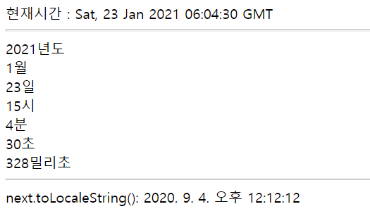
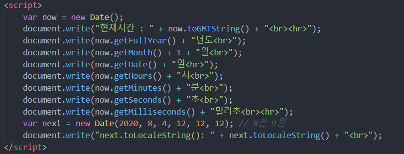
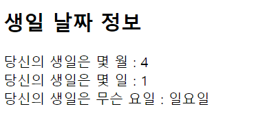
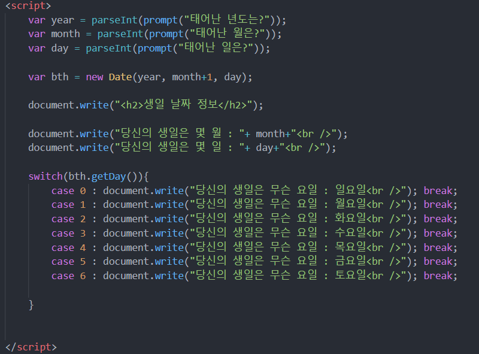

1. Date 객체
- Date 객체
- 시간 정보를 담는 객체
- 현재 시간 정보로 초기화된 객체 생성
EX) var now = new Date();
- 지정된 시간으로 객체 생성
var startDay = new Date(2020, 2, 1); // 2020년 3월 1일(2는 3월을 뜻함);
- Date 객체 활용
var now = new Date(); // 현재 시간 정보로 초기화된 객체 생성
var date = now.getDate(); // -일
var hour = now.getHours(); // -시
var day = now.getDay(); // -요일을 정수로 리턴 (일:0 ~ 토:6)
2. Date 객체의 메소드 _ 날짜 정보를 가져올 때 (get~)
- getFullYear()
- getMonth()
- getDate()
- getDay()
- getHours
- getMinutes()
- getSeconds()
- getMilliseconds
- getTime()
- 1970년 1월 1일 0시 0분 0초를 기준으로 현재 시간까지 경과된 밀리 초 리턴
3. Date 객체의 메소드 _ 날짜 정보를 수정할 때 (set~)
- setFullYear(year)
- setMonth(month)
- setDate(date)
- setHours(hour)
- setMinutes(minute)
- setSeconds(second)
- setMilliseconds(ms)
- setTime(t)
4. Date 객체의 메소드 _ 문자열로 리턴(to~String)
- toGMTString()
- 객체에 든 시간 정보를 GMT 표준 표기 방식의 문자열로 리턴
- toLocaleString()
- 객체에 든 날짜, 시간 정보를 로컬 표현의 문자열로 리턴
- toLocaleTimeString()
- toLocaleDateString()
5. 예제(1) ; 현재 시각 출력하기

- 위 사진 그대로 출력
예시 코드

6. 예제(2) ; 생일 입력 시 요일 출력하기

- 년, 월, 일을 입력 받을 변수 지정, 입력 받기
- 요일을 출력하기
예시 코드
